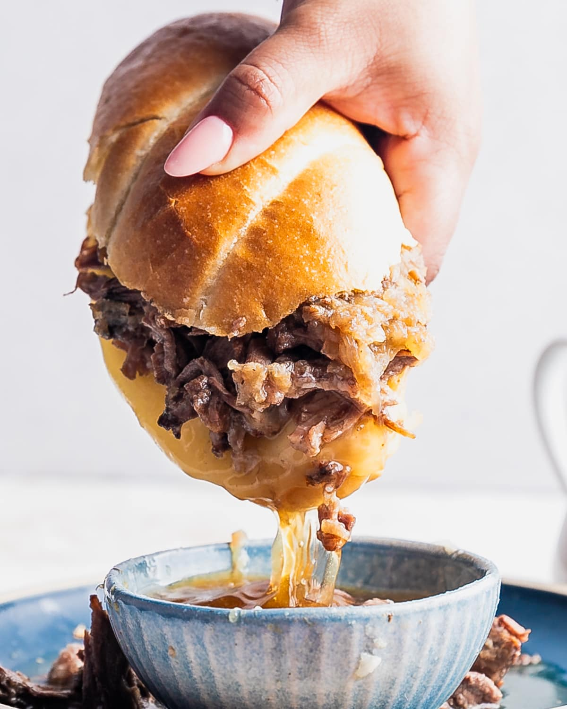

All Recipies / Mom's French Dip Sandwich

Description
This is one of my family recipies. One of my go to favorites, and a way that I remember her.
Ingredients
- 2 Pack of French Bread
- 2ibs of Boars Head Roast Beef
- 2ib of Munster Cheese
- Olive Oil
- 1 Sweet Onion
- 2 cups of beef broth
Instructions
- Dice up sweet onion
- Set oven to broil
- Start a sauce pan on medium low heat and add beef broth to simmer
- Start warming a skillet under medium high heat and add 1 tablespoon of Olive Oil
- Add diced sweet onion to skillet and cook until golden brown
- Slice french down middle and cut in half to sandwich size
- Spoon a little olive oil onto sliced bread and spread (you don't need much)
- Cook underside slice of bread in broiler with a cookie sheet until golden brown topside
- Repeat above step for topside, but while cooking, layer desired amount of roast beef and munster slices on sandwich
- Add sauted onions below cheese while layering, helps keep it together
- Insert layered bottom slice into oven and cook until golden brown
- Finally, add top bun to sandwich
- Slice sandwich in half, and serve with bowl of beef broth